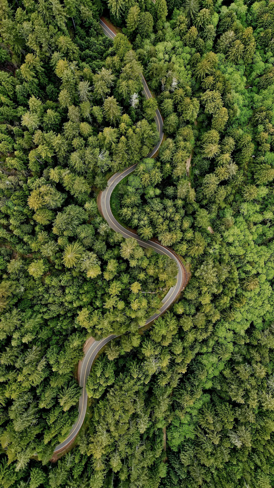

A smarter
way forward.
Connecting every part of roadside care.
Intelligent assistance, healthier vehicles, and safer journeys for Sri Lanka.
Predictive maintenance that connects
insight to the next service.
FOUR PERSPECTIVES. Smarter dispatch Traffic intelligence Predictive care 3D accident claims
Roadside care.
Reconnected.
A breakdown is more than a vehicle problem. It affects the driver, the road, and everyone who helps get things moving again.
Kaduna.lk brings these pieces together. Our research explores a unified platform for roadside assistance and automotive services in Sri Lanka, connecting vehicle owners, service providers, insurers, and traffic insights.
Connected by design.
Four focused research components.
A shared ambition to keep journeys moving.
Vehicle signals → shared intelligence → informed action
ONE KADUNA.LK ECOSYSTEMThe thinking behind
the technology.
Explore the problem, the evidence,
and the approach behind our research.
Research summaries draw on the project proposals and Progress Presentation I. Final evaluation findings will be added as they become available.
Every step.
Every milestone.
The 2026 regular batch research project timeline, from the first proposal to publication evidence.
Based on the supplied 2026 RP project schedule. Dates use Sri Lanka time. Deadline labels describe the schedule, not submission or completion status. Mark allocations will be added when confirmed.
Ideas, documented.
A closer look at the work.
Explore our reports and research materials.
No documents match your search. Try a different name or filter.
The story as it unfolds.
Different strengths.
One shared direction.
Four Software Engineering undergraduates
at the Sri Lanka Institute of Information Technology.
Our academic supervisors
Good research
starts a conversation.
Interested in intelligent mobility, roadside assistance, or a closer look at our work? We’d love to connect.
Malabe, Sri Lanka